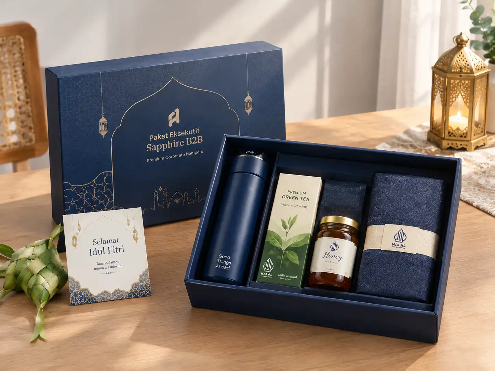

Hampers Lebaran untuk Klien dan Mitra Bisnis dan Cara Memilih Bingkisan yang Tepat
Ringkasan Inti
- Hampers Lebaran menjadi jembatan apresiasi profesional yang memperkokoh relasi bisnis jangka panjang.
- Pemilihan komposisi produk wajib mengutamakan higienitas, sertifikat halal, dan reputasi rasa.
- Sentuhan kartu ucapan eksekutif dan kemasan sleeve logo perusahaan menegaskan penghargaan yang personal.
- Perhatikan kebijakan etika penerimaan hadiah internal klien sebelum bingkisan dikirimkan.

Memberikan hampers Lebaran untuk klien dan rekanan kerja bukan sekadar rutinitas tahunan menjelang Idulfitri. Di dunia korporat, bingkisan ini mencerminkan rasa hormat, komitmen kerja sama, dan etika profesional yang telah dibangun sepanjang tahun.
Mengapa Perusahaan Memberikan Hampers kepada Relasi Bisnis?
Momen hari raya Idulfitri merupakan saat yang tepat untuk mempererat silaturahmi formal. Melalui bingkisan yang dipilih dengan seksama di Parcel Lebaran, perusahaan menyampaikan rasa terima kasih atas kepercayaan klien serta dukungan mitra kerja.
Bukan nilai nominal harga yang menjadi tolok ukur utama, melainkan ketelitian dalam memilih produk yang pantas, kemasan yang higienis, serta pesan ucapan yang ditulis dengan tulus tanpa terkesan berorientasi promosi agresif.
Apa Perbedaan Hampers untuk Klien dan Mitra Bisnis?
Meski sama-sama berstatus corporate gift B2B, pendekatan penyajiannya dapat dibedakan:
- Hampers untuk Klien (Clients): Ditujukan untuk menjaga kepuasan dan loyalitas pelanggan strategis. Kemasannya cenderung dirancang anggun dengan kartu ucapan hangat yang menghargai sinergi bisnis yang telah terjalin.
- Hampers untuk Mitra Bisnis & Vendor: Ditujukan untuk rekanan operasional, pemasok bahan baku, atau agensi pendukung. Penekanannya adalah pada apresiasi kerja sama tim yang solid dan profesional.
- Hampers untuk Tamu Kehormatan & Instansi: Menyesuaikan dengan regulasi instansi terkait etika hadiah, dengan fokus pada kesopanan kemasan dan keterbukaan isi.
Bagaimana Memilih Isi Hampers Lebaran untuk Relasi Bisnis?
Kombinasi isi harus memiliki cita rasa lezat, legalitas halal resmi, dan daya tahan yang baik:
Kue Kering Butter Pilihan
Nastar butter wisman, kastengel edam, dan putri salju lumer. Pastikan toples bersegel aluminium foil kedap udara agar kue tetap renyah saat dibuka di hari raya.
Kurma Premium & Madu Murni
Kurma Ajwa Madinah atau Medjool Jumbo dalam wadah elegan berpadu madu randu atau multiflora organik, memperkuat nuansa sunnah hari raya.
Minuman & Artisan Tea
Teh daun bunga chamomile, white tea, atau biji kopi sangrai lokal berkualitas yang melengkapi momen berkumpul bersama keluarga klien.
Souvenir Cangkir Keramik
Perangkat cangkir keramik berdesain eksklusif atau sendok madu kayu jati yang dapat disimpan sebagai kenang-kenangan fungsional.
Seperti Apa Hampers yang Cocok untuk Klien Perusahaan?
Hampers ideal untuk relasi B2B tidak harus berukuran raksasa. Desain yang ringkas, kokoh, dan berkesan *tailor-made* sering kali jauh lebih disukai karena praktis diletakkan di ruang kerja atau dibawa pulang.
Pastikan kartu ucapan memuat nama penerima secara akurat (beserta gelar apabila dibutuhkan) serta kalimat ucapan syukur atas kerja sama yang telah berjalan baik.
Bagaimana Membuat Hampers Terlihat Lebih Personal?
Sentuhan personal dapat diwujudkan tanpa harus membongkar total isi standar. Anda dapat memanfaatkan layanan kustomisasi seperti yang diulas pada panduan parcel Lebaran custom untuk perusahaan:
- Sleeve Boks Berlogo Korporat: Jaket pembungkus kardus/hardbox cetak full-color dengan logo perusahaan dan ornamen Idulfitri yang elegan.
- Kartu Ucapan Tertanda Tangan Direksi: Kartu lipat berbahan kertas jasmine atau textured paper dengan ucapan resmi bertandatangan jajaran direktur.
- Pita Satin Selaras Brand: Aksen pita dengan palet warna primer identitas korporat Anda.
Apa yang Perlu Diperhatikan Sebelum Mengirim Hampers?
Sebelum pengiriman dijalankan, tim sekretariat atau GA kantor perlu memastikan:
- Kebijakan Hadiah (No Gift Policy): Beberapa perusahaan BUMN, perbankan, dan multinasional memiliki batas nominal penerimaan hadiah karyawan. Lakukan konfirmasi sopan terlebih dahulu.
- Akurasi Alamat Kantor & PIC Penerima: Pastikan kantor relasi masih beroperasi dan belum memulai libur cuti bersama.
- Kondisi Segel Makanan: Cek tanggal kedaluwarsa minimal 6 bulan ke depan dan pastikan toples tidak retak.
- Proteksi Ekspedisi Logistik: Gunakan packing kayu atau kardus tebal bersegel fragile jika pengiriman antarkota.
Bagaimana Memilih Vendor Hampers Corporate?
Bekerja samalah dengan vendor parcel Lebaran untuk perusahaan yang memiliki rekam jejak B2B jelas. Penyedia seperti Parcel Lebaran memahami standar administrasi PO kantor, penyusunan faktur pajak resmi, serta kepatuhan jadwal serah terima barang.
Kesalahan Saat Menyiapkan Hampers untuk Relasi Bisnis
Hindari kekeliruan fatal yang sering terjadi:
- Menuliskan pesan kartu ucapan yang bernada jualan atau promosi produk secara berlebihan.
- Salah mengeja nama pimpinan klien atau nama instansi pada amplop ucapan.
- Mengirimkan hampers pada H-2 Lebaran saat kantor klien sudah tutup dan penjaga gedung menolak kiriman.
Tanya Jawab Hampers Lebaran untuk Klien
Siapkan Hampers Eksklusif untuk Klien Terbaik Anda
Pilihan paket hampers hardbox premium berstandar kurasi halal siap menyempurnakan hubungan silaturahmi korporat Anda bersama Parcel Lebaran.
Kesimpulan
Hampers Lebaran untuk klien dan mitra bisnis adalah investasi relasional yang sangat berharga. Kesesuaian komposisi isi halal, kerapian kemasan boks, ketepatan etika pengiriman, dan personalisasi kartu ucapan menjadi penentu utama kesan yang ditinggalkan.
Rencanakan pesanan Anda lebih awal bersama tim kurasi terpercaya di Parcel Lebaran untuk mendapatkan jaminan kualitas rasa kue mentega wisman terbaik dan pengiriman aman tanpa hambatan.
Kunjungi juga panduan pengadaan kami lainnya: